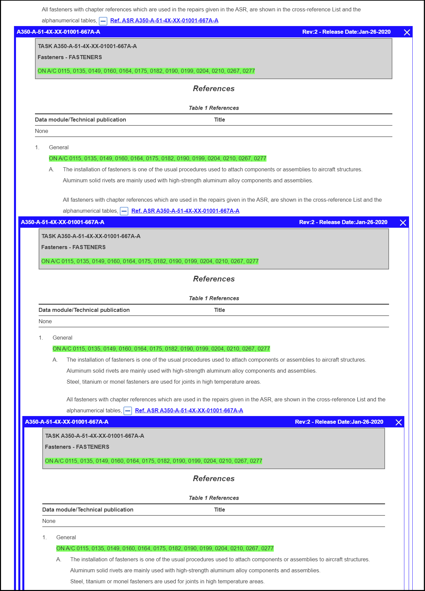

Les références intégrées peuvent apparaître dans le texte et les tableaux d'une
publication. Vous pouvez identifier les références par  l'icône et le lien de référence immédiatement après l'icône, par exemple:
l'icône et le lien de référence immédiatement après l'icône, par exemple:
Vous pouvez utiliser les  icônes Afficher la référence et Masquer la référence pour afficher /
masquer la référence intégrée.
icônes Afficher la référence et Masquer la référence pour afficher /
masquer la référence intégrée.

Le titre de l'en-tête affiche ces informations:
- Titre de référence intégré
- Numéro de révision (ou numéro de révision du document)
- Date de sortie (si le document est publié)
Si vous sélectionnez un filtre d'applicabilité, seules les références qui s'appliquent à ce filtre sont extensibles dans le contenu. Tout le contenu et les références intégrées qui ne figurent pas dans le filtre sélectionné sont grisés et les références ne peuvent pas être ouvertes.
Pour afficher/masquer une référence intégrée dans une composition, procédez comme suit:-
Cliquez sur
 l'icône Afficher la référence pour afficher la
référence intégrée.
La référence est affichée dans un cadre de conteneur, par exemple:
l'icône Afficher la référence pour afficher la
référence intégrée.
La référence est affichée dans un cadre de conteneur, par exemple:
Référence intégrée étendue
Remarque : Vous devez cliquer sur l'icône Afficher la référence pour ouvrir
la référence intégrée dans la composition actuellement affichée. Si vous
cliquez sur le lien de référence, la référence s'ouvre dans le volet
Contenu et la composition d'origine n'est pas
visible.Lorsque vous ouvrez une référence intégrée dans un tableau, la référence s'affiche directement sous la ligne du tableau contenant la référence sélectionnée, par exemple:
Référence intégrée étendue (tableau)
Remarque : Lorsque vous ouvrez une référence intégrée, l'icône se transforme icône.Vous pouvez développer plusieurs références intégrées. Ceux-ci sont présentés dans des cadres de conteneurs séparés avec leurs propres en-tête, par exemple:
Références intégrées étendues multiples
Si la référence intégrée contient un graphique, le graphique apparaît sous forme de vignette dans la référence. Lorsque vous cliquez sur le lien graphique dans la vignette, le graphique s'ouvre dans le volet Graphiques.Remarque : Si vous développez un graphique dans une référence intégrée, la liste de figures correspond au document et ne contient pas de figures de la référence intégrée développée.Les références intégrées peuvent contenir des attachements (telles que des suppléments ou des révisions temporaires). S'il y a les attachements associées à la référence, celles-ci sont signalées par des icônes, des pop-ups et des bannières qui vous permettent de voir ces documents. La case "Attachements" dans la marge droite de la fenêtre de l'application est mise à jour avec le pièces jointes du contenu intégré. Il se met à jour lorsque vous ouvrez ou fermez une référence intégrée. Pour plus de détails sur pour afficher les pièces jointes, reportez-vous à Afficher Attachement.Remarque :- La fonction de pièce jointe ne fonctionne que dans les documents chargés avec cette fonctionnalité activée.
- Vous ne pouvez pas créer ou modifier des pièces jointes dans une référence intégrée.
Toutes les annotations contenues dans une référence intégrée s'affichent dans la référence. La case "Annotations" dans la marge droite de la fenêtre de l'application est mise à jour avec l'annotation du contenu intégré. Il met à jour lorsque vous ouvrez ou fermez une référence intégrée. Pour plus d'informations sur les annotations, reportez-vous à Les Annotations.Remarque :- Vous ne pouvez pas créer ou modifier une annotation dans une référence intégrée.
- La barre des annotations n'indique pas où se trouve l'annotation dans le document.
-
Cliquez sur l'icône Masquer la référence pour fermer une
référence.
Remarque : Vous pouvez également cliquer sur
 l'icône Fermer sur le côté droit de l'en-tête
pour fermer toutes les références dans la référence développée.
l'icône Fermer sur le côté droit de l'en-tête
pour fermer toutes les références dans la référence développée.